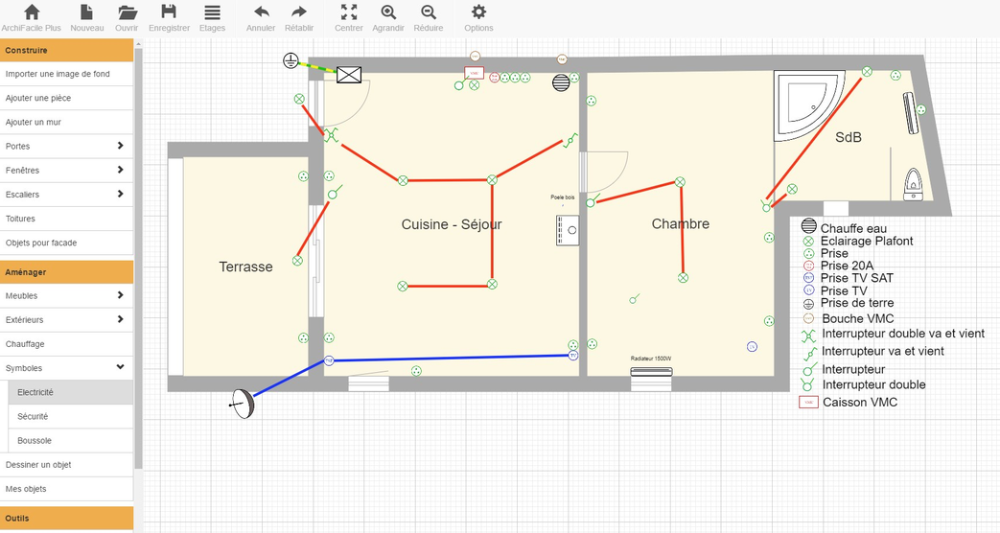

Étude de l'installation électrique
Travail en équipe. Une Tiny House reste une habitation à part entière : son installation électrique doit être complète, sûre, et dimensionnée avec précision malgré la faible surface disponible.
Une petite maison, une vraie installation
Votre Tiny House respecte les mêmes exigences de confort qu'une habitation classique : éclairage, prises, réseau, électroménager. Sur une surface réduite, chaque circuit doit néanmoins être pensé avec la même rigueur que dans une maison traditionnelle — en particulier autour des pièces d'eau, où les risques électriques sont les plus élevés.
Cette étude s'appuie sur le plan retenu au Projet 3 et sur l'agencement intérieur finalisé dans votre maquette numérique.
Votre dossier avec la partie « Étude de l'installation électrique » complétée : un plan d'implantation, une justification du respect de la norme NFC 15-100, l'implantation de l'électroménager, et le calcul de la puissance souscrite.

Quatre livrables attendus
-
Le plan d'implantation
Sur un plan de votre Tiny House, positionnez et légendez avec les symboles normalisés : les luminaires (plafonniers, spots, appliques), les appareils de commande (interrupteurs simples, va-et-vient, variateurs), les prises de courant (16 A), ainsi que les prises RJ45 et la prise TV. Chaque pièce doit pouvoir être éclairée et commandée de façon cohérente avec ses usages.
-
Le respect de la norme NFC 15-100
Justifiez, pièce par pièce, la conformité de votre implantation à la norme NFC 15-100 : nombre minimal de prises et de points lumineux par pièce, positionnement des prises hors des volumes de sécurité dans la salle d'eau, hauteur d'implantation des appareillages, protection différentielle des circuits. Expliquez les choix qui découlent directement de ces règles.
-
L'implantation de l'électroménager
Positionnez sur le plan l'électroménager choisi et préconisé (plaque de cuisson, réfrigérateur, four ou four combiné, lave-linge, ballon d'eau chaude sanitaire, etc.). Pour chaque appareil, indiquez le modèle retenu, sa puissance nominale et le type de raccordement (prise dédiée ou circuit spécialisé).
-
L'estimation de la puissance souscrite
Additionnez les puissances nominales de tous les récepteurs (éclairage, prises, électroménager, chauffage) pour obtenir une puissance électrique totale. Comparez ce total aux paliers de puissance usuels proposés par les fournisseurs d'électricité, et choisissez la puissance à souscrire immédiatement supérieure à vos besoins réels. Justifiez ce choix dans le dossier.
Du relevé des appareils à la puissance souscrite
Un exemple de tableau de recensement, à adapter à votre propre implantation :
| Appareil / circuit | Puissance | Remarque |
|---|---|---|
| Éclairage (ensemble des points lumineux) | Somme des puissances des luminaires installés | |
| Prises de courant (circuits 16 A) | Selon le nombre de circuits dédiés | |
| Plaque de cuisson | Circuit spécialisé | |
| Four | Circuit spécialisé | |
| Réfrigérateur | ||
| Lave-linge | Circuit spécialisé | |
| Ballon ECS | Circuit spécialisé, souvent en heures creuses | |
| Chauffage | Voir démarche de développement durable — Projet 0 | |
| Puissance totale estimée | ||
La puissance électrique totale calculée n'est pas directement la puissance à souscrire : en pratique, tous les appareils ne fonctionnent jamais simultanément à pleine puissance. Une fois votre estimation posée, choisissez la puissance souscrite correspondant au palier usuel immédiatement supérieur, et expliquez dans le dossier la logique de ce choix.
Un critère du cahier des charges
Cette étude répond directement à l'exigence R1.2.5 — Respecter les normes de sécurité (électrique, chauffage, structure) du cahier des charges présenté au Projet 0. Elle correspond aux critères 13, 14 et 15 de la grille d'évaluation.
Fiches outils associées à l'étude électrique de votre Tiny House
- Fiche outil — Symboles des schémas électriques domestiques
- Fiche outil — Norme NFC 15-100
- Fiche outil — Protection des personnes
- Fiche outil — Protection des biens et des circuits